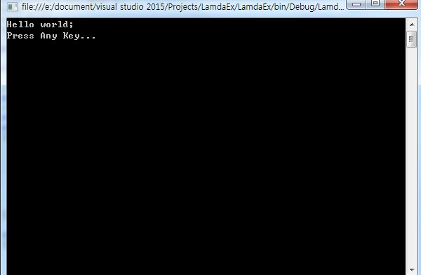
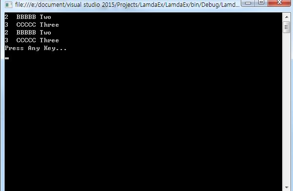

こんにちは。明月です。
今日はC#のLamdaについて勉強します。
プログラムを開発した経験がある方なら最近にLamda(ラムダ)について聞いたことがあると思います。
最近、トレンドになっている関数型プログラミングがこのラムダ式を利用して作成するからです。正確に言うとLamda式（ラムダ）は関数型プログラミングの匿名メソッド式を簡略に記述するような方法です。
すなわち、匿名メソッドを簡略に記述する式がLamda式です。
Lamda
下記の例は匿名メソッドを既存の方法のdelegateを利用して生成しました。
using System;
using System.Collections.Generic;
using System.Linq;
using System.Text;
using System.Threading.Tasks;
namespace LamdaEx
{
class Program
{
//デリゲート
public delegate void anonymousMethod(String data);
//デリゲートフィールド
private anonymousMethod fieldList;
public Program()
{
//匿名メソッド宣言
fieldList += delegate (String data)
{
Console.WriteLine(data);
};
//デリゲート呼出す。
fieldList("Hello world;");
}
static void Main(string[] args)
{
new Program();
Console.WriteLine("Press Any Key...");
Console.ReadLine();
}
}
}

[C# スタディ - 25] delegate(デリゲート)
上の例は「delegate」の投稿で勉強したことがある例です。「delegate」キーワードで匿名メソッドを作成することではメンバーで宣言された「delegate」のデータタイプにパラメタデータタイプを合わせて作成します。戻り値もメンバーで宣言された「delegate」のデータタイプに合わせて返却します。
次の例は「Lamda」式で匿名メソッドを実装したことです。
using System;
using System.Collections.Generic;
using System.Linq;
using System.Text;
using System.Threading.Tasks;
namespace LamdaEx
{
class Program
{
//デリゲート
public delegate void anonymousMethod(String data);
//デリゲートフィールド
private anonymousMethod fieldList;
public Program()
{
//匿名メソッド宣言(Lamda式)
fieldList += (data)
{
Console.WriteLine(data);
};
//デリゲート呼出す。
fieldList("Hello world;");
}
static void Main(string[] args)
{
new Program();
Console.WriteLine("Press Any Key...");
Console.ReadLine();
}
}
}
上の例をみると既存の「delegate」から「delegate」のキーワードが省略して、パラメタのデータタイプも省略しました。
//delegate式の匿名メソッド
delegate(データタイプ パラメタ名)
{
文
}
//Lamda式の匿名メソッド
(パラメタ名)=>
{
文
}
上の例を見ると「delegate」式の匿名メソッドを記述する文法より少し簡略になりました。しかし、上の例だけみるとLamda式で実装すればいい点が何かを知れないですね。
それなら複雑に匿名メソッドで使う型の「Enumerable」クラスのメソッドで例を確認してみると差が確実に見えそうです。
[C# スタディ - 28] LINQ(リンク)-2 (メソッド式)
次の例を「Enumerable」クラスのメソッドの「Join」です。Joinメソッドのパラメタは匿名メソッドの３個があります。
using System;
using System.Collections.Generic;
using System.Linq;
using System.Text;
using System.Threading.Tasks;
namespace LamdaEx
{
class TestClass
{
public TestClass(int number, String data)
{
this.Number = number;
this.Data = data;
}
public int Number
{
get; set;
}
public String Data
{
get; set;
}
class Program
{
public Program()
{
List<TestClass> list1 = new List<TestClass>();
list1.Add(new TestClass(1, "AAAAA"));
list1.Add(new TestClass(2, "BBBBB"));
list1.Add(new TestClass(3, "CCCCC"));
list1.Add(new TestClass(4, "DDDDD"));
List<TestClass> list2 = new List<TestClass>();
list2.Add(new TestClass(2, "Two"));
list2.Add(new TestClass(3, "Three"));
//匿名メソッドをdelegateで使う。
List<TestClass> ret = list1.Join(
list2,
//元のデータのオブジェクト
delegate (TestClass item1)
{
return item1.Number;
},
//Joinされたデータのオブジェクト
delegate (TestClass item2)
{
return item2.Number;
},
//Joinされた元とJoinされたデータ
delegate (TestClass item1, TestClass item2)
{
return new TestClass(item1.Number, item1.Data + " " + item2.Data);
}
).ToList();
foreach (TestClass item in ret)
{
Console.WriteLine(item.Number + " " + item.Data);
}
//匿名メソッドをLamda式で使う。
List<TestClass> ret2 = list1.Join(
list2,
//元のデータのオブジェクト
(item1) => { return item1.Number; },
//Joinされたデータのオブジェクト
(item2) => { return item2.Number; },
//Joinされた元とJoinされたデータ
(item1, item2) =>
{
return new TestClass(item1.Number, item1.Data + " " + item2.Data);
}
).ToList();
foreach (TestClass item in ret2)
{
Console.WriteLine(item.Number + " " + item.Data);
}
}
static void Main(string[] args)
{
new Program();
Console.WriteLine("Press Any Key...");
Console.ReadLine();
}
}
}
}

上の例を見ると２つのリストがあり、Joinメソッドを通ってリストを併合します。「Join」メソッドのパラメタは３つの匿名メソッドが必要です。それで始めのJoinメソッドには「delegate」の匿名メソッドを利用して実装しています。そして２つ目のJoinメソッドは「Lamda」式を利用して実装していますね。
性能は差が無いですが、ソースの可読性がたくさん上がることになります。（ソースが簡単になるとソース可読性が上がります。)
最近のトレンドは関数型プログラミングですが、「delegate」メソッド式よりLamda式で実装すれば複雑な処理も簡単に実装できると思います。後の関数プログラムの並列処理(パラレル)もLamda式で実装すれば簡単に実装ができます。
Javaは「delegate」はないですが、Lamda式はあります。それでLamda式に実装するとJava開発者もソースを読むことができるのでLamda式で作成することに勧めます。
それで関数型プログラムを実装する時はLamda式で作成するようによく覚えましょう。
- [C# スタディ - 39] Thread(スレッド)2019/07/24 00:57:35
- [C# スタディ - 38] 「IDisposable」と「using」2019/07/23 00:05:40
- [C# スタディ - 37] ファイルシステム(File System) - FileStream、 Encoding、 Serializable2019/07/22 23:45:05
- [C# スタディ - 36] ファイルシステム(File System) - FileInfo,DirectoryInfo2019/07/22 23:30:17
- [C# スタディ - 35] MSDN(Microsoft Developer Network)2019/07/22 23:15:42
- [C# スタディ - 34] Attribute(アトリビュート)2019/07/20 02:27:23
- [C# スタディ - 33] Reflection(リフレクション)2019/07/20 02:22:03
- [C# スタディ - 32] Objectタイプ、varタイプ(匿名タイプ)、dynamicタイプ2019/07/18 22:50:16
- [C# スタディ - 31] Partial Type(クラス分割)、拡張メソッド2019/07/18 20:22:16
- [C# スタディ - 30] Lamda(ラムダ)2019/07/17 23:06:42
- [C# スタディ - 29] LINQ(リンク)-3 (Enumerableクラス)2019/07/17 20:57:00
- [C# スタディ - 28] LINQ(リンク)-2 (メソッド式)2019/07/16 22:40:03
- [C# スタディ - 27] LINQ(リンク)-12019/07/16 20:41:27
- [C# スタディ - 26] event(イベント)2019/07/16 00:59:34
- [C# スタディ - 25] delegate(デリゲート)2019/07/16 00:48:03
- [Java スタディ - 40] Web spring frameworkのJSPで使う言語 JSTL - XML2019/10/03 20:02:06
- [Java スタディ - 39] Web spring frameworkのJSPで使う言語 JSTL - 関数、データベース2019/10/02 21:00:22
- [Java スタディ - 38] Web spring frameworkのJSPで使う言語 JSTL - コアー、フォーマッティング2019/10/01 21:48:08
- [Java スタディ - 37] 「Web spring framework」の「Controller」で「ajax」の要請する時「json」タイプで返却する方法2019/09/30 22:19:34
- [Java スタディ - 36] Spring web frameworkでControllerを使用する方法2019/09/27 20:39:09
- [Java スタディ - 35] EclipseでSpring web frameworkを利用してウェブサービスプロジェクトを立ち上がる方法2019/09/26 21:31:25
- [Java スタディ - 34] Web serviceプログラムのServletを作成方法(Eclipse)2019/09/25 19:58:30
- [Java スタディ - 33] 「Eclipse」でトムキャット(tomcat)を設定する方法2019/09/24 19:35:54
- [Java スタディ - 32] Mavenをインストール、使用方法、そしてeclipseに連結する方法2019/09/24 00:19:25
- [Java スタディ - 31] Reflection - Annotation編2019/09/20 22:34:40
- [Java スタディ - 30] Reflection - Variable編2019/09/19 20:20:10
- [Java スタディ - 29] Reflection - Method編2019/09/18 20:02:14
- [Java スタディ - 28] Reflection - Class編2019/09/17 20:22:02
- [Java スタディ - 27] ソケット(Socket)通信2019/09/16 23:42:46
- [Java スタディ - 26] アノテーション(annotation)2019/09/13 20:03:58